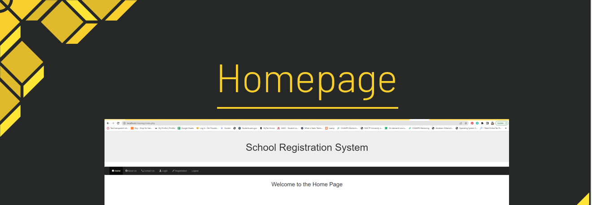

Student Information System
This is a student enrollment system for my capstone class at the University of Arizona Global Campus. It is a system in PHP and MySQL. The program has a student enrollment or admin dashboard to add students as well as a course. The students can enroll in the courses. The database is named "cap" and is used to import to phpmyadmin.
Here is a link to see the coding on GitHub
Please click the link below or see the embedded video for an explanation of the Student Information System. It goes over the SRS document and UML Design Models and shows how students are added and registered for classes.